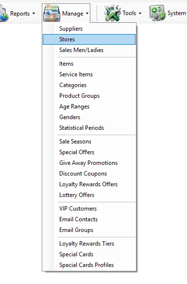
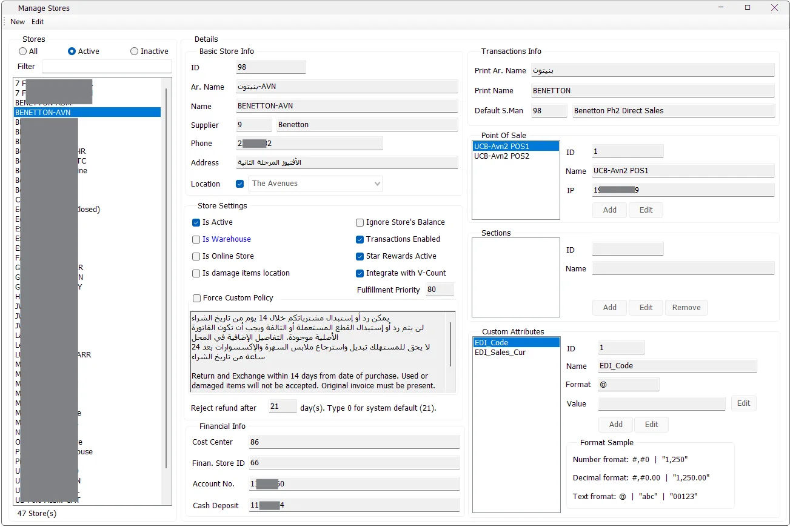

Branch setup
Create a retail store
Create the Store master, assign its Location, configure transaction settings and add its POS terminals.
Manage Stores is the central store-master screen in IMS. It defines each branch, warehouse or online store together with its location, transaction settings, V-Count integration, refund policy, POS terminals, store sections, financial mapping and custom attributes. These definitions are reused throughout sales, inventory, reporting, rewards and integrations.


The left side of the screen lists stores and provides two ways to narrow the list:
| Control | Purpose |
|---|---|
| All | Shows active and inactive stores. |
| Active | Shows active stores only. This is the default view when the screen opens. |
| Inactive | Shows inactive stores only. |
| Filter | Filters the visible list by store name. |
| Store count | Shows how many stores match the current active/inactive and name filters. |
Store ID and Name are required. After the store has been created, its ID becomes read-only.
| Field | Purpose |
|---|---|
| ID | Unique numeric store identifier used throughout IMS. |
| Ar. Name | Arabic store name. |
| Name | Main store name displayed in IMS lists and reports. |
| Supplier | Links the store to the applicable supplier record when the business setup requires that relationship. |
| Phone | Store phone number. |
| Address | Store address. |
| Location | Optionally assigns the store to an IMS Location. This relationship is used by reports that filter or group stores by Location. |
| Setting | Meaning |
|---|---|
| Is Active | Controls whether the store is considered active. Reports that provide an Include inactive stores option use this store status. |
| Is Warehouse | Marks the store record as a warehouse. |
| Is Online Store | Marks the store as an online-store location for supported online-order and integration workflows. |
| Is damage items location | Marks the location for damaged-item handling. |
| Ignore Store's Balance | Flags the store so supported IMS workflows can ignore the store balance where this option is respected. |
| Transactions Enabled | Controls whether the store is enabled for transaction processing. |
| Star Rewards Active | Enables Star Rewards participation for the store. |
| Integrate with V-Count | Marks the store for the IMS V-Count people-traffic integration. Imported traffic is used by reporting features that show Traffic and Conversion Rate. |
| Fulfillment Priority | Stores the priority used by supported fulfillment workflows. |
Reject refund after controls the store's allowed return/refund period. Enter 0 to use the IMS system default shown next to the field.
By default, the store uses the system refund-policy text. Enable Force Custom Policy when that store must print or use its own store-specific policy text instead.
| Field | Purpose |
|---|---|
| Print Ar. Name | Arabic store name used by transaction/receipt output where supported. |
| Print Name | Store name used by transaction/receipt output where supported. |
| Default S.Man | Default Sales Man/Lady assigned to the store for supported sales workflows. The ID and name come from Manage → Sales Men/Ladies. |
A store can contain one or more POS terminals. Select the store and enter Edit mode to maintain its POS list.
| POS field | Meaning |
|---|---|
| ID | POS identifier within the selected store. |
| Name | POS/workstation name. Name is required. |
| IP | POS IP address. It is required and must be unique across the configured IMS POS terminals. |
Select the POS, click Edit, change Name or IP, and click Save. IMS validates the IP before saving.
Sections let a store divide its merchandise or operating area into store-specific sections.
| Section field | Meaning |
|---|---|
| ID | Section identifier within the selected store. |
| Name | Required section name. IMS prevents duplicate section names within the same store. |
Use Add or Edit while the store is in Edit mode. A section can be removed only when no items are assigned to that store section.
| Field | Purpose |
|---|---|
| Cost Center | Financial cost-center mapping for the store. |
| Finan. Store ID | Store identifier used by the financial mapping/integration. |
| Account No. | Financial account number stored for the store. |
| Cash Deposit | Cash-deposit account/mapping stored for the store. |
The detailed accounting workflow for these fields will be cross-linked when the Financial modules are documented.
Store Custom Attributes extend the standard store master with business-specific values. The attribute definition is global, while the Value is stored independently for each store.
| Field | Meaning |
|---|---|
| ID | Global store-attribute identifier. |
| Name | Attribute name. Spaces are normalized to underscores when IMS saves the definition. |
| Format | Display format for the attribute, such as number, decimal or text formatting. |
| Value | The selected store's value for the selected attribute. |
Users with the required global-attribute permission can add or edit attribute definitions. Store-specific values can then be maintained for each store.
The Store screen now explains several criteria and columns used throughout the reporting documentation:
Store maintenance follows the IMS access policy. Users without store-management permission cannot create or edit stores. Creating or editing global Store Custom Attribute definitions uses the separate global-attributes permission. IMS also checks normal connection, maintenance and automation-blocking conditions before protected store, POS, section and attribute maintenance operations.
Create the Store master, assign its Location, configure transaction settings and add its POS terminals.
Enable V-Count integration on the applicable store so imported people traffic can be associated with that store.
Use the return-days setting and optionally force a custom refund-policy text.
Use Custom Attributes for values such as EDI codes or other fields required by custom reporting and integrations.
The Store master can reference a Default S.Man from Manage → Sales Men/Ladies. In the opposite direction, each Sales Man/Lady keeps a Can Sell In list that determines the stores assigned to that person.